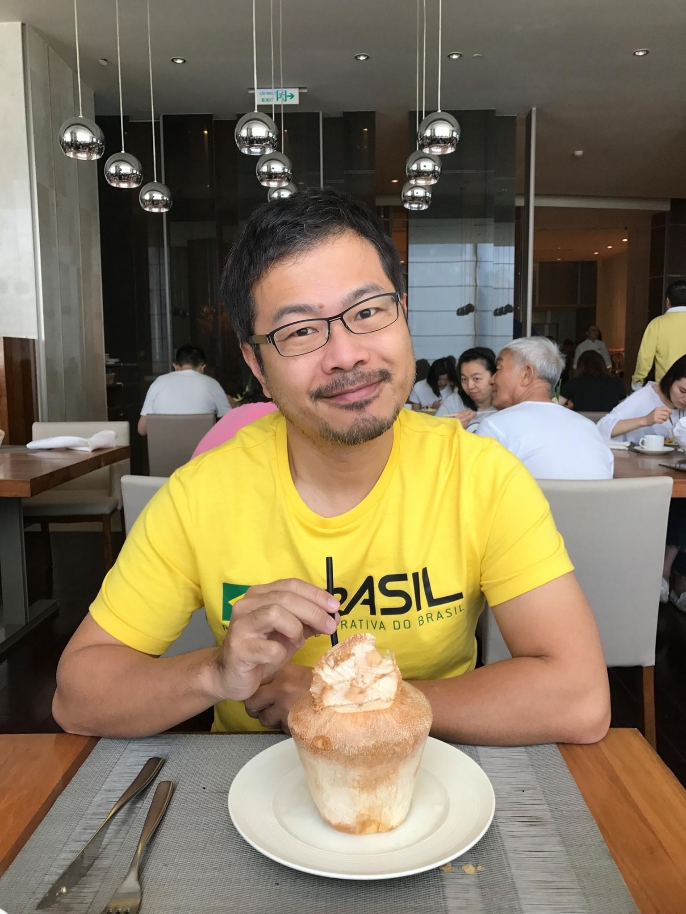

施智閔的個人網站
國立中山大學 副教授
個人簡歷
學歷
第二語言教育 博士
多倫多大學 加拿大
英語教學 碩士
賓州大學 美國
海洋環境學系 學士
國立中山大學
教學經歷
95.02—95.07
專任助理教授 玄奘大學 外文系系
95.08—97.07
專任助理教授 國立勤益科技大學 應用英語系
97.07—104.02
專任助理教授 新加坡 南洋理工大學 英語語言與文學系
104.02—108.01
專任助理教授 國立中山大學外文系
108.02—迄今
專任副教授 國立中山大學外文系
家庭背景與教學經歷
我來自一個教育的家庭。父母親和大姐都是小學老師。不僅如此，父親以及母親兩邊的親戚中共有十多名各級學校的教師，包含姑姑、嬸嬸、叔叔、阿姨、姨丈、表嫂、表哥、表姊、表妹、堂妹等。因此，我是在學校中打滾長大的小孩，對於教育界中發生的事情耳濡目染，這應該也是後來我跨入教育領域的主因。 在我的成長過程中，母親對我的影響最大。她是一個責任感與意志力都很堅強的女性，對於想要完成的事情使命必達，並且全心的投入。因為她很嚴格，而且非常投入，家長非常喜歡指定把子女送到她的班上，所以是非常熱門的老師。她曾經說過將近30年的教學生涯除了產假和癌症開刀之外不曾請過假。雖然以現在的觀點來看未必是件好事，但是，至少顯示她對於工作的執著。同時，在送禮風行的年代中，她也堅決不收家長的禮物，我常常看到她在家裡懇辭學生家長的禮物，即使有些家長趁她不在家的時候把禮物放在家裡，她也會堅持到家長的家裏退還禮物，若非如此，每年三節家裡大概有吃不完的禮盒與收不完的禮品。不可否認的，她的言行至今仍然影響著我，使我在某些時候會有一種完美主義的堅持，總之，不可否認的，她成為我在教學生涯中反思的一面鏡子。 我的教學經歷非常多元與完整，曾經任教於台灣各類型的大專院校，也在國外任教六年半之久。以在台灣的經歷而言，起初，研究所畢業之後，我任教於私立技職院校。取得博士學位之後，先在私立大學任職半年，之後轉職到公立科技大學。之後，經歷國外六年半的教學生涯之後，再轉職到本校，公立大學。如果將台灣的高等教育分為公立大學、私立大學、公立科技大學，以及私立科技大學四大區塊的話，恰巧我都曾經在四大區塊中的學校磨練過。以在國外的經歷而言，我曾經於2008年到2015年任教於新加坡南洋理工大學，相較於台灣的教育環境，新加坡非常不同，也刺激我能用不同的視角看待教育，並且讓我能融合與反思國外的教學經驗，應用在目前的教學之中。總之，這20年間，面對國內外如此多元的教育環境的磨練，以及全球高等教育環境之劇烈變化，逐漸磨練成今天的我。在教學生涯屆滿20年的此時此刻，加上即將跨入知天命之齡，不管在教學方法，教育心理，教育哲學等方面，都臻於成熟！ 109學年度(上)英文高級課程有一位同學在教學評量上寫道：「百年難得一見好老師！」或許是過譽了，但是，我相信同學們在修習了我開的課程之後，一定可以感受到我的用心，也必然會有一些收穫。
教學理論與方法
-
1、運用教學理論
以英文中高級以及英文高級課程來說，我希望同學們多開口說英文。然而多數學生因為過去基測、學測、以及指考沒有英文口說測驗，導致國高中時代在英文口語訓練上完全荒廢，英語口語能力幾乎是零。然而，同學們對於英語口說的目標總是希望自己可以非常流暢的用英文溝通，這樣的目標並非一蹴可幾，反而讓他們覺得遙遙無期而不想努力。 每學期期初，我常常看見同學們很掙扎又痛苦的思索該講哪個英文單字，他們可能為了講出一兩個字而緊張到流汗。我常常要很有耐心的等他們講出這一兩個字，並且適時的微笑點頭鼓勵與幫忙。我常說：「你要勇敢地開口，從一個字開始，慢慢地兩個字，三個字，一個句子，兩個句子，一個段落，循序漸進。」這其實是運用俄國心理學家維高斯基(Vygotsky)的近側發展區間(zone of proximal development)以及鷹架理論(scaffolding theory)。也曾經有位同學，期初每次上課的時候會說：「老師你不要叫我，我不會講。」然而，經由一步步引導，沒想到期中上台報告時跌破眼鏡，不僅完整講完兩三分鐘的內容，而且相當流暢。我說：「你看，你明明會講但是對自己卻沒有信心，你應該要相信自己！」我常常告訴同學，口語練習就像是一個正向循環。起初開口練習，因此英文口語變得流暢，這樣的轉變會強化對英文的自信與興趣，然後變得更主動找機會練習，之後進入無限正向的循環。如果一個學生進入正向循環，我知道即使有一天沒有老師，他還是會往正確的方向繼續前進，達成終身學習的目標。109學年度(上)學生於英文高級教學評量上寫道：「給予鼓勵，使學生願意開口說英文。」
-
2、善用個人特質與認真的態度，營造有利學習的課堂氣氛
我應該不算枯燥的人，愛開玩笑也喜歡自我解嘲。善用自身的幽默感，降低學生在課堂中無趣的感受，在108學年度(上)語言評量概論的教學評量以及107學年度(下)畢業生離校問卷皆有同學提到這一點。此外，我也運用本身和善與親切的個性與耐心，塑造與學生良性互動的基礎，增加學生學習正面的氛圍。在109學年度(上)語言評量概論的教學評量以及108學年度(下)畢業生離校問卷皆有同學提到這一點。 也許是遺傳自母親的工作態度，我總是思考如何讓學生有最大的收穫。在教學評量上，同學們提到最多的部分，應該是我教學認真。認真呈現在很多方面，包含備課的努力被看見與肯定，課程設計符合需求，針對學生報告解說詳盡等。
-
3、課程架構清楚，循序漸進，講解清晰並澄清學生疑問
期初時依照課程大綱做詳盡的課程簡介，並且告知學生課程的作業、考試以及相關的考試日期或是作業繳交截止日期。期中也會提醒學生該注意的事項。內容的編排由淺入深，並告知課程安排背後的原因，也與學生溝通教學理念。講解務求清楚，學生有問題時能立即澄清並且即時回答。例如，109(上)學生於英文高級課程的教學評量上寫道:「課程內容組織與系統十分清晰」。
-
4、了解學生背景並進行需求分析(needs analysis)
即使是同一門課，每年的學生族群背景都不一樣。我會考慮學生的背景與需求作些微調整。每學期第一天，我會發一張學習背景以及需求的問卷，了解學生的英文程度，學習背景，對自身英文能力的看法，以及想學習的方向，做為設計課程方向以及內容的參考。學期中以及學期結束時，我會對照學生自我的認知與了解，與我對學生的觀察是否吻合，並且作動態調整。109學年度(上)有位學生在教學評量上寫道：「能夠針對學生想要增加的能力規劃課程。」
-
5、善用網路工具
大約十年前，我還在新加坡任教時，同事們就會分享一些教學用的小工具或平台，作為上課中啟發同學興趣，喚回學生注意力的方法。從十年前的Socrative到最近這五年的Kahoot，這些藉由網路平台施行的小測驗，常常都可以為課程帶來一些小趣味與歡樂，同時也重新抓住學生的注意力。以Kahoot為例，從一開始學生登錄Kahoot遊戲，選擇自己的暱稱開始，就會有一連串的驚奇。例如，這學期上觀光英語的時候，某位同學的暱稱是：OOO今天翹課(OOO為該位翹課學生的真實姓名)。當暱稱顯示在螢幕上時，全班同學笑到人仰馬翻。接下來，題目伴隨輕快的背景音樂，製造輕鬆與娛樂的答題氛圍。同學們的驚呼聲、驚訝聲、與笑聲因答案的正確與否而此起彼落。Kahoot的出現經常是一天上課中最歡樂的時光。10８學年度(下)有一位同學在語言評量概論的教學評量中寫道：「．．．內容及多媒體使用佳。」
-
6、使用學習單 (參考附件一 )
不可否認在目前的教育環境中，外在的誘惑比二三十年前增加很多，時下的學生也不像以往的學生專注。為了使學生上課時能掌握要點，同時吸引學生的注意力，並且增加學生的學習動機，兩三年前於科技部計畫訪談中得知有數位老師使用學習單，因此我也在一些課程中開始使用學習單，學生在當天課程結束時必須繳交學習單，以證明自己能掌握課程要點。例如，這學期在觀光英語的下課時間，看到幾位同學依然拿著iPad觀看上課中播放過的英文Youtube影片，只為了回答學習單上的問題。雖然課堂中過度的焦慮需要避免，但是適度的壓力是學生學習的動力。同時，當同學上台報告時，也會依照課程性質，請同學們填寫學習單，列出報告內容大綱以及優缺點，以避免同學們面對他組報告時事不關己的態度。
-
7、分組作業
分組作業於人文學門中十分常見。雖然研究顯示分組作業常常能產生更完美的作業，並且也是職場中必備的能力，然而，有些學生對於分組作業十分排斥。部份的原因是分組作業中需要處理人際關係的問題，作業的分配問題，工作效率的問題，以及遇到不積極組員的問題等。起初，我的態度是讓同學自行解決分組作業中衍生的問題。但是，偶而有些同學抱怨組員不積極參與。後來，我參考研究資料，針對分組作業的教學原理，完成分組作業的策略，以及面對不合作組員的策略做簡單教學（相關問題亦在學習單範例中出現）。除了學期中同學們可以隨時反映分組作業進行狀況之外，學期末也可以在反思表(參考附件二第四題學生之真實填寫 反思表)上填寫不合作組員的名單以及具體事證以作為評分依據，達成進行分組作業之初衷。
-
8、抄襲
在新加坡任教時，學校對於抄襲一事非常重視，學生繳交作業時，都必須上傳電子檔到SafeAssign平台，與網路資料以及之前學生的作業比對有無抄襲的情形。除此之外，紙本作業需要附上學院所設計之作業封面，學生必須在作業封面上簽名，已宣示作業無抄襲情形，並了解抄襲會導致校規的處置。回到台灣之後，我會針對抄襲的部分講解並練習。雖然中山大學並無SafeAssign這樣的平台，但是，我也依循同樣的方式，請同學們繳交作業時必須附上作業封面(參考 附件三)，簽名宣誓並未抄襲。
-
9、不斷的改變與進化
教學過程像是行動研究一般，如下圖，Edmonds and Kennedy (2017)所說，是一個不斷探索，介入，觀察，反思與修正的循環過程。在教學生涯中，我不斷的從自己的研究成果，畢業生的回饋，學生的意見，自我的學習，成長，與經驗，以及整體教育環境與政策的影響，調整我的教學內容、教學方法、與教育哲學。前兩週我的教學助理到班錄影，看完我對學生英文上台報告的講評之後，他說：「老師，你好像變嚴了？」他的話讓我想了很久，這兩年來我有什麼變化嗎？也許是過去兩年我讓內容更豐富了，更完備了，更切中要點了。時代、環境、與學生一直改變，我一也不斷改變，以符合時代的需求。
教學內容
-
1、選擇學生有興趣的素材
挑選學生有興趣的素材，做為同學上課英文口語訓練討論的主題。以英文中高級以及英文高級為例，因為中高級的主題是多元文化以及全球視野，配合學校鼓勵學出國當交換生的政策以及課本的內容，我們會探討出國當交換生，以及出國工作等議題。當提及多元文化與包容在異國婚姻的層面時，也會詢問同學對於異國婚姻的看法，讓同學們深省自身內心是否存在種族歧視與偏見。這些都是年輕人感興趣的議題，藉由討論，不但讓同學練習語言，也加深對於課程主軸的認識，增加對於英語的興趣。108(下)在畢業生離校問卷上，一位學生寫道：「智閔教授! 真的是我遇過會一直想稱讚他的教授。是老師也是慈父，總是叮嚀我們各項作業成績細節，尤其是這學期又有疫情的關係，老師也會十分關心，上老師的課真的會感受到滿滿的老師對學生的關愛和指導。另外課堂內容也讓口語發音有明顯的進步，每週的問題到後面越來越貼近生活也超有趣的，以前我全家都知道我討厭英文，現在偶而回家還會跟他們說我們英文課上討論的問題，他們都很驚訝，也覺得教授很厲害！希望之後再學習英文的路上還能一直遇到老師這種良師。」
-
2、結合時事
結合時事往往可以創造不同的上課成果。印象中美國總統選舉時，川普與拜登兩方競爭白熱化，開票過程更是高潮迭起。起初我以為學生對於政治新聞不感興趣，特別是國際政治，加上每個人的政治立場不同，很容易引起爭議，所以我上課時盡量避談政治議題。但是，在美國大選剛結束而開票結果尚未底定時，全班八組同學英文上台簡報的作業主題中，有三組選擇探討美國大選。我意外發現學生對這個話題非常有興趣，因此當下決定打鐵趁熱，問同學支持拜登或是川普，非常出乎意料之外的，在我的帶動之下，全班超過30個同學每個人都願意用簡單的英文發言表達對於拜登或川普的支持，那一天同學課堂參與度之高是我教學生涯20年之中僅見，也是第一次有一個話題能夠讓所有同學都願意主動舉手用英文發言，實在是一個奇蹟。對於我而言，真的感受到一種前所未有的悸動，課後也傳了訊息到班級群組，並且鼓勵大家把握每一次使用英文發言的機會。
-
3、結合過去新聞報導
以我教語言評量概論為例，學生最喜歡的部分，是我平時會注意一些媒體上相關的評量新聞，在課堂中播放，讓同學們用評量的理論來分析這些新聞上出現的案例。雖然媒體有時呈現溫馨，戲謔，或是有趣的印象，我常提醒同學不要被媒體帶風向。例如，以下列這一則新聞為例 雖然影片呈現溫馨的氛圍，甚至曾經有一位修課同學小學時也被新聞中的老師教過，也讚揚該位老師，但是我還是提醒學生，以評量的觀點而言，老師有其他的方式可以表達歉意，不需要以畢業考的方式道歉，降低考試的效度。109學年度(上)有一位同學在教學評量中寫道：「很多影片、新聞很有趣。」
-
4、理論與實務並重
以語言評量概論而言，課程著重理論也著重實務。課程的前半段介紹評量理論。課程後半段必須運用評量理論設計英文聽說讀寫的考題。通常學生比較喜歡實做的部分。例如，109(上)有位同學在教學意見調查表上寫道：「我覺得可以自己實作的部分很有趣。」
評量方法
我的研究領域是語言評量，也是教學領域中我最擅長的項目。相對於其他老師而言，我更了解如何運用評量方法以達到教學目的。多元評量(multiple assessment)的概念成為每一門課評量的理論主軸，任務型評量(task-based assessment)與替代式評量(alternative assessment)都運用於不同課程之中。
-
1、學習歷程檔案(portfolio)
學習歷程檔案是近30年來教育領域中常用的評量方式。它不僅可以記載學生的學習過程，提供學生反思的機會，也可以了解學生學習的成果。在英文寫作、英文中高級、以及英文高級這些課程中，學習歷程檔案是我常用的方式。例如，在英文中高級與英文高級這兩門課程中，學生都需要上台用英文報告兩次。每一次正式報告前一週先上台預演，老師以及學生提供意見供學生參考與改進之後，隔一週再正式報告與評分。所以，每學期學生共有四次上台報告的機會(兩次預演以及兩次正式報告)。不管是預演或是正式報告都會請TA錄影，並上傳至雲端供同學觀看以及參考。學期末時，學生必須參閱四次上台報告的影片，於反思表上分析自己這學期進步以及待改進的地方。這些上台報告的影片，以及反思表，成為學生在這一門課的學習歷程檔案。尤其對照第一次上台報告預演(第一次錄影)以及第二次上台正式報告(第四次錄影)的差異時，學生常會看到自己的進步，也成為他們自我肯定以及繼續學習的動力。我並且鼓勵學生將這些學習歷程檔案留下來，成為成長的足跡，將來回顧時，一定會有不一樣的感受。例如，當我的TA回頭看大一時的報告錄影時，才發現原來他當初如此生澀，也才可以了解，原來大學階段他已經進步這麼多。
-
2、同儕評量(peer assessment)
當同學們以英文上台報告或是撰寫英文作文時，我常常運用同儕評量。以英文簡報為例，同儕評量不僅能夠提供接受評量同學除了老師之外的意見，對於評量者而言，不僅能讓他們更專心地聆聽其他同學的報告，同時也可以更熟悉評量的標準，而且可以見賢思齊，見不賢而內自省。 附件四為同學們上台報告時，我請同學們使用來評量其他同學的表格，上面列出上台報告時所有評量的指標。在使用前，我會運用大約兩小時的時間說明英文簡報技巧，之後再逐項說明 附件一的評量標準，使同學們清楚的了解他們所要評量的依據。印象很深的是曾經有一組同學報告完畢之後，我收回同學之間的互評，當我快速地翻閱評語與意見，並唸給全班同學聽時，其中一則評語寫道：「這個聲音，這個語調，聽了都要戀愛了。」當場全部的同學開始起鬨！我對那位被讚美的同學說：「你在這班有小粉絲耶！」該位同學雖然未曾出國留學，之前的英文老師也非母語人士，但是發音非常精準，像母語人士，搭配可愛稚嫩的臉蛋，確實給某些同學一些幻想。類似這樣的評語我完全沒想過，也講不出來，但是來自同儕的提供不同的觀點，必然給這位同學很大的鼓舞。令我驚訝的是，這位同學在之前的英文課隱身在所有同學之中，完全沒有被發現。後來，在我的鼓勵之下，在期中考最忙碌的時間，參加本校與AIT英語簡報比賽，進入最終決賽。在畢業前往清華大學就讀研究所之前，他非常感謝這一些學習以及參賽的經驗。總之，根據多年來的觀察，同學們的評分與我的看法呈現高度正相關，不但證明學生也有專業的能力評斷上台報告的優劣，也提供不一樣的觀點，給同儕更多建議，肯定、與動力。
-
3、課程反思表 (self reflection)
藉由反思表，可以了解學生學習的心路歷程，也是除了紙本作業之外一個衡量學生學習狀況的工具。例如，閱讀語言評量概論課程的作業反思表(參閱 附件二)時，很多學生提到從來沒想過設計考試還有這麼多理論要考慮，也可以了解學生的分工狀態。 附件五是學生看完英文上台報告的學習歷程錄影之後填寫的反思表，可以了解學生對於自己表現的看法，與我的看法互相對照，並給予學生一些未來的建議。
-
4、一對一的晤談 (individual conferencing)
在學期接近尾聲時，我常會進行一對一的晤談。綜合學生這學期的表現，給予學生未來方向的建議。對於修習英文中高級，或是英文高級的同學來說，這些英文課可能是他們大學階段唯一選修英文課的機會，我會把握簡短的時間，參考學生的學習歷程檔案與反思表，建議他們未來努力的方向，並提供適合他們的英語學習策略，成為他們未來沒有英文老師的時候，有繼續精進的方向以及策略。 在期末一對一的對談中，給予建議固然重要，更重要的是指出我認為他們有進步的地方，給予口頭的鼓勵與讚美，肯定他們的努力，希望藉由正向的能量，啟發學生的學習動機，成為他們學習中成長的動力，進而促進終身學習(lifelong learning)。每個同學都需要得到認可與肯定，過多負面的批評與指教，即使是出於善意，都很可能扼殺學生對學習的熱忱與興趣。在期末一對一的晤談中，我希望即使這一門課對學生的幫助有限，也不要成為學生學習過程中一個負面的經驗。
-
5、正向的鼓勵
我一直深深地認為，教學法只能把一個老師培養成一個教書匠，匠意味著技巧完美但沒有感情，沒有感動。教育心理是另一個不可忽視的層面。我漸漸地體會到，任何人，不論年齡老少，都需要受到鼓勵與肯定。這種肯定，在學校，在職場，在家庭，甚至在親密關係中都適用。在學習過程中，老師書面或是言語不斷的支持與鼓勵。不僅是學生學習的動力，潛移默化中更可以增加學生對於課程的興趣。 奇怪的是，在語言評量的教科書以及相關的研究中，對於鼓勵的討論卻屈指可數。我認為原因在於在學術研究盛行的西方國家，老師對於學生言語的鼓勵視為理所當然，已經深化在課堂文化中。我在美國讀研究所時曾到美國高中實習，美籍老師常把good，very good掛在嘴邊。在美國就讀研究所時，即使自認為作業寫得普普通通，教授也常常稱讚我的作業。但是，在台灣，因為文化的關係，老師較不會，或是不習慣稱讚或是肯定學生的表現。即使學生表現優異，也少有言語的稱讚或是肯定。取而代之是學好是應該，學不好就該罵的教育哲學，有些時候對於學習需要關注的學生欠缺同理心，這其實深深的扼殺學生學習的興趣，也貶抑了學生的學習興趣。 這幾年的觀察，中山大學非外文系的學生，大多數覺得英文重要，但自己的英文能力需要提升，也對自己的英文能力沒有自信，其中的原因之一，可能也和成長過程較缺乏老師鼓勵有關。令我驚訝的是，很多表現得很好的學生，完全沒有被老師發掘，從未被老師肯定，因此，當我肯定他們的時候，我常常發現他們的眼神是疑惑，懷疑，當然還有幾分不習慣。但是，後來證明我的看法都是對的。例如，幾年前英文中高級課程中，有一位音樂系的同學，在他的求學過程中，老師從來沒有肯定他。但是我發現他的英文口語能力很有潛力，當我稱讚他的時候，他的眼神透露出疑惑與懷疑。然而，後來他的英語上台報告得到英文中高級組24組各班代表中的第二名，顯示我的眼光非常精準。我常常問一些有潛力的學生：「曾經有英文老師稱讚過你的英文嗎？」學生全部都回覆沒有。我告訴他：「沒關係，我是第一個，在你的表現中我看到你未來無限的可能性。」我會鼓勵他們未來繼續耕耘，老師的肯定常常在不知不覺中點燃學生對於這個科目的熱情。 另外一個例子可以證明我的想法。目前電機系的教學助理，高中時曾經到美國舊金山遊學，我問他是否去國外遊學讓他對英文產生興趣，但是他覺得並沒有，反而是我的肯定與鼓勵讓他對英文開始感興趣。後來，他得到英文中高級簡報比賽第一名，之後參加美國在台協會與本校舉辦的英文簡報比賽並進入最終決賽。他未來想出國當交換生，並且有出國深造與工作的計畫，也已經考過托福預計明年成行。
除此之外，在教學評量上很多學生相關的評論。例如，108學年度(上)畢業生離校問卷有同學提到：「我的寫作能力顯得有點不足，但您總是以稱讚的方式鼓勵我，真的很感謝您。」
-
6、定時詢問學生的學習狀況
我的課程節奏其實不快。我認為與其囫圇吞棗，不如紮紮實實的走穩每一步。其中的一個方式就是定時詢問學生的學習狀況。每一堂課50分鐘，我至少中間會在簡報上提問1-3題，讓同學們互相討論答案。一方面是轉換上課進行的方式，讓同學們即將渙散的注意力找尋重新聚焦的機會。另一方面讓我利用同學們討論的時間，在教室中穿梭，一一詢問班上同學的學習狀況。如果有問題卻不好意思當所有人的面提出的同學此時可以私下詢問，解決他們的疑問，不用等到下課。即使我只是簡單的一一詢問或是對話「今天或之前的課程內容有沒有問題？」「如果沒有的話，有問題隨時Line我喔！」都會讓同學覺得被關心。原則上三小時的課程中，盡量能夠每個同學詢問一次。意外的，在教學評量中我常常看到類似的評論「老師會隨時關心我們的學習狀況」。 這樣的方法也讓我和學生建立比較良性的互動。我特別發現理工科系，尤其男同學比較常找我詢問課業，未來就學，或其他人生的疑問。可能因為理工科系比較冰冷生硬的授課內容，相對於人文領域強調社會平等與包容多元的反差，投射出溫暖的感覺所造成的印象。曾經有理工科系的男同學找我和他外校外文系的女朋友一起談生涯規劃。又如，曾經有理工科系的男學生修習觀光英語，課後找我談感情問題，當我問他為什麼沒有找他的導師時，他提到：「因為我的導師應該不想聽我講這些，我覺得老師平時會關心我們的學習狀況，也比較願意聆聽我們的想法。」後來在該位學生以及該門課女性教學助理的同意之下，一起討論他的感情問題，提供不僅是我，也是一位異性同儕不同的想法以及感情觀，我們一起晤談了一個多小時，之後也順利解開他的感情疑惑。
研究引導教學
對於從事英語教學相關研究的我而言，和其他領域老師於教學上最大的不同，就是我的研究即是教學現場發生的事情。我的科技部計畫的研究成果給予我在教學上一些建議以及反饋。在2016年執行的多益測驗效度的研究當中，藉由訪談於職場上各行業的從業人員，包含眾多本校的校友，我了解他們對於多益測驗的看法，以及對於大學英語課程方向期待。在那一件研究案中，所有的受訪者認為大學英文應著重於英文的會話，這也導致後來我在課程中加強學生口語方面的訓練。這樣的轉變，從教學意見中可以感受到學生的肯定與支持。去年底在海工系的大家聚中，巧遇五年前畢業的學生，他非常感謝我在英文高級課程中為他在跨國企業任職打下良好的英語溝通基礎。目前在台北離岸風電公司任職的他，面對公司中十多國的外籍同事，以及法國籍的主管，溝通無礙，甚至糾正法籍主管的發音，看到他在席間有時需要忙碌的與同事用英文傳遞訊息，可以感受到過去的教學已經開花結果。 2018年的研究案關於大專英語教師的教學評量方法。於訪談40位大學英語教師之後，了解各學校教師在評量上的方法以及反思，以及他們評量方法的學習與管道。對我而言，這不僅是一件科技部計畫，也可以從不同的大學院校教師身上取經，並且將別人寶貴的經驗運用在自己的課堂中。例如，多數的老師認為，同儕評量（peer assessment）運用在英語的上台報告似乎比在英文寫作課程中更有效果，這與我的觀察不謀而合，也讓我在英文上台報告中更頻繁的使用同儕評量。此外，我也藉由訪談中從別的教師身上學到使用學習單，運用在課堂之中確實發現學生較以往更為專注。另外，很多他校老師提及使用Zuvio，也提供我除了Socrative以及Kahoot之外另一個網路教學工具的選擇。此外，不同的訪談教師所在的學校有不同的資源與規定，不僅增廣見聞，也讓我從他們身上反思，並找出讓自己於評量上精進的方式。 2019年的研究計畫是關於期末的學生評鑑教學，這在教育領域是一個極具爭議的話題，相關的研究已經有將近百年的歷史。藉由訪談大學英語教師與大學生，了解老師與學生的教學評量經驗與看法，從中可以了解學生喜歡的教學模式，學生對於教學的看法，以及學生忌諱的教學狀況，也成為授課時很有用的參考資料。
教學計畫與教學成果
-
教學計畫
關於教學計畫，本人於民國108年一月剛完成一件為期三年半的教育部全校型教學計畫。自104(上)學期至107(上)學期共計三年半期間，本人投入教育部多元文化語境之英文學習革新計劃（大一英文全校性計畫）。起初全國僅有9所大學獲得教育部全校性計畫之補助，後期增至10所。第一年(104學年)期間本人協助計畫評量機制的建立，以及英文課程評量尺規的設計，並且藉由研討會幫助系上老師了解並熟悉評量尺規的使用。105(上)學期起至計畫結束為止兩年半期間，本人與黃舒屏老師擔任計畫協同主持人(計畫主持人為本校校長)，為計畫核心人物，負責計畫的撰寫與執行，教育部官員訪視之預備與簡報，計畫成果的彙整與報告等。於計畫執行期間致力於革新本校大一英文課程，將多元文化與全球視野兩大計畫主軸融入全校大一英文課程之中，並且導入多元評量，以實作做為評量的核心，並減少傳統紙筆測驗的使用，以貼近學生現實生活與未來職場情境為最高評量宗旨，在本人擔任計畫協同主持人的兩年半期間，向教育部申請合計新台幣640萬元之計畫經費，執行情形與執行成果深受教育部肯定，也翻轉了大一英文課程的內容以及評量方法。
-
教學成果
於新加坡任教期間，先後與兩位碩士生合力發表文章於SSCI期刊Language Assessment Quarterly。學生繳交作業之後，發現作業內容擴充之後或許有機會可以投稿到期刊，於是與學生一起合作。學生較了解新加坡考試的狀況，本人對於評量理論以及論文撰寫的方式比較熟悉，雙方集思廣益發揮最大的效果。期刊發表之後，學生也非常有成就感，同事們也感到驚奇，認為碩士生可以發表文章於SSCI期刊甚為不易。期刊內容如下：
- Loh, T., & Shih, C.-M. (2016). The English language test of the Singapore Primary School Leaving Examination. Language Assessment Quarterly, 13, 156-166. (corresponding author) (SSCI, A&HCI)
- Hassan, N. H., & Shih, C.-M. (2013). The Singapore-Cambridge General Certificate of Education Advanced Level General Paper Examination. Language Assessment Quarterly, 10, 444-451. (corresponding author) (SSCI, A&HCI)
另一方面之教學成果展現於學生參加校內外比賽。在校際競賽方面，109年指導資工系學生虞可威參加美國在台協會與本校合辦之全國大專院校英文簡報比賽，在非英文主修組別中，得到優選的佳績，另一位電機系學生陳鴻笙亦進入決賽。106年亦曾指導光電系徐瑞澤與陳君睿參加同一競賽，進入決賽，成績斐然。不像其他學校經由校內競賽海選之後，推派校級代表，挹注全校資源參賽，申請人指導的學生進入大學之前完全沒有發覺自己英文方面的潛力與興趣，但是藉由注重簡報技巧，應答技巧，發音、重音、與語調的訓練，使學生能夠入圍決賽甚至得獎，並建立自信，啟發學習動機，對學生來說確實是一生的資產。